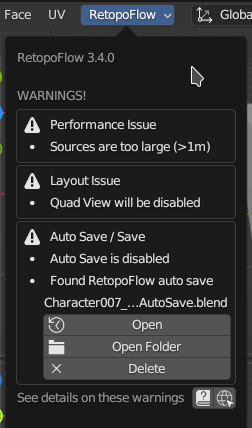
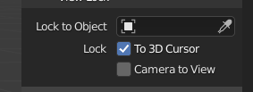

RetopoFlow might present a warning if it detects a situation which is not ideal to start in.

Parts of RetopoFlow can fail if the add-on folder name contains letters that are not alphanumeric character (i.e., a-z, A-Z, 0-9).
This happens when RetopoFlow is installed from a zip file that was not packaged correctly.
In particular, the zip file created by GitHub (either Code > Download Zip or Releases > Download Source) will use folder names with invalid characters, usually a dash.
Our recommended solution is to uninstall the unofficially packaged RetopoFlow and then install an officially packaged RetopoFlow from Blender Market or GitHub.
An unexpected error was thrown while RetopoFlow is enabled. This could be due to an issue with installing, but it might be due to an unexpected system setup.
Try uninstalling RetopoFlow, restart Blender, and then install an officially packaged RetopoFlow from Blender Market.
Please report it as a new issue so that we can fix it.
The installed version of RetopoFlow requires a later version of Blender for correct use. For example, RetopoFlow v3.4 requires Blender 3.4 or later. RetopoFlow may still work on a previous version of Blender, but we cannot provide support if you encounter a bug.
Different versions of RetopoFlow are available on the Blender Market and on GitHub.
RetopoFlow is can work fine in Local View, but sometimes it can behave unexpectedly. If you notice unexpected behavior, try exiting Local View before starting RetopoFlow.
RetopoFlow requires at least source mesh to start. A source mesh can be any visible mesh that is not being edited.
RetopoFlow assumes that the edited mesh is the target mesh. If the edited mesh is not visible, RetopoFlow cannot start.
See Quick Start Guide for more details.
RetopoFlow is designed to work with sources and targets that have invertible transformation matrices. RetopoFlow will warn if a source object or the target object has a transformation matrix that is not invertible (ex: one of the scale transform values is near 0).
While RetopoFlow will still start and operate when an object has a non-invertible matrix, the results and behaviors are undefined.
Sources can sometimes warp in unexpected ways when they use an armature modifier. This is a known limitation, and we plan to fix this in future versions. Keep an eye on this issue for updates.
Until we fix this, use one of the following to workaround this limitation:
RetopoFlow is designed to perform well on typical production retopology scenarios. Running RetopoFlow on source/target meshes beyond a reasonable range is possible, but it will result in slower performance and a poorer experience.
A typical retopology workflow would involve <1m polygons in total for all source meshes and <20k polygons for the target mesh. Beyond these counts is the point at which Blender starts to slow down, and there’s not a lot we can do to be faster than Blender itself.
If your retopology target polygon count exceeds the 20k count threshold, please try the following:
If your total source mesh(es) polygon count exceeds the 1m count threshold, try the following:
RetopoFlow is designed to work in a single 3D view. Running RetopoFlow with Quad View turned on or with multiple 3D Views can result in RetopoFlow showing up in every 3D View, but only allowing interaction in one.
If either Lock to Object or Lock to 3D View are enabled, navigating in RetopoFlow can be incorrect.
Disable either of these settings in the 3D View Sidebar (N) before starting RetopoFlow.

If Blender’s auto save is disabled, any work done since the last time you saved can be lost if Blender crashes. To enable auto save, go Edit > Preferences > Save & Load > Auto Save.
If you are working on an unsaved blend file, your changes will be saved to a temporary file (see path below) when you press Ctrl+S.
Temporary file path: {options.get_auto_save_filepath()}
If you directly open an auto saved file, some of the visual settings and mesh sizes will be different. Clicking the “Finish Auto Save Recovery” button will recover the original visual settings and mesh sizes.
If a source mesh is detected to have inward facing normals, RetopoFlow will report a warning. Inward facing normals will cause new geometry to be created incorrectly or to prevent it from being selected.
Possible fix: exit RetopoFlow, switch to Edit Mode on the source mesh, recalculate normals, then try RetopoFlow again.